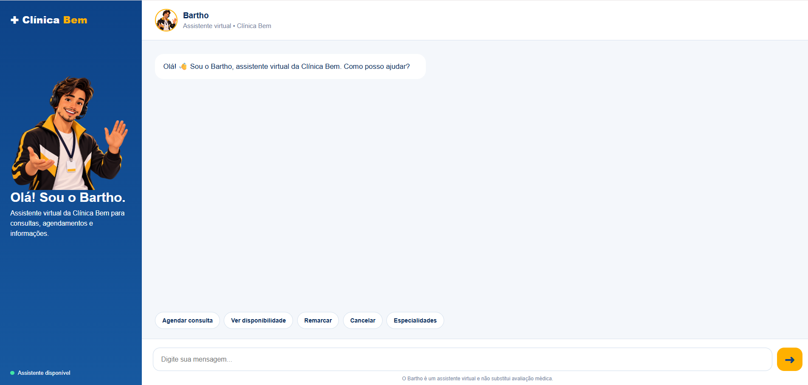
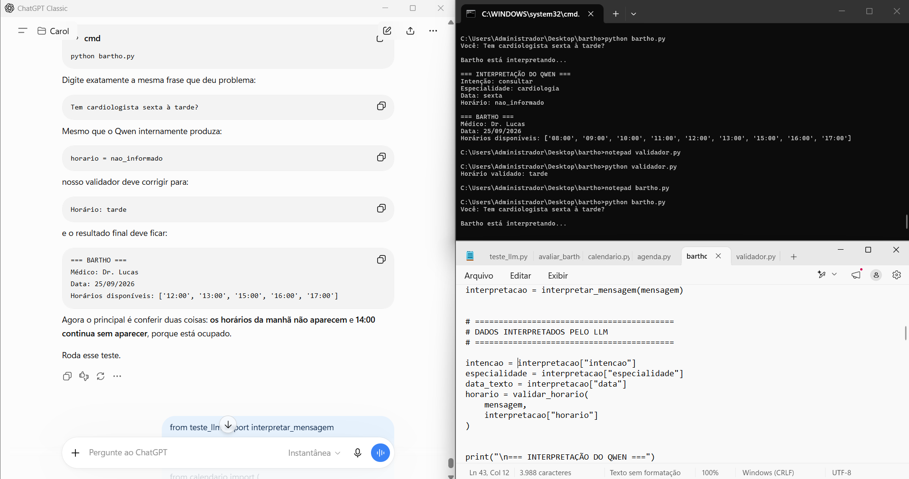
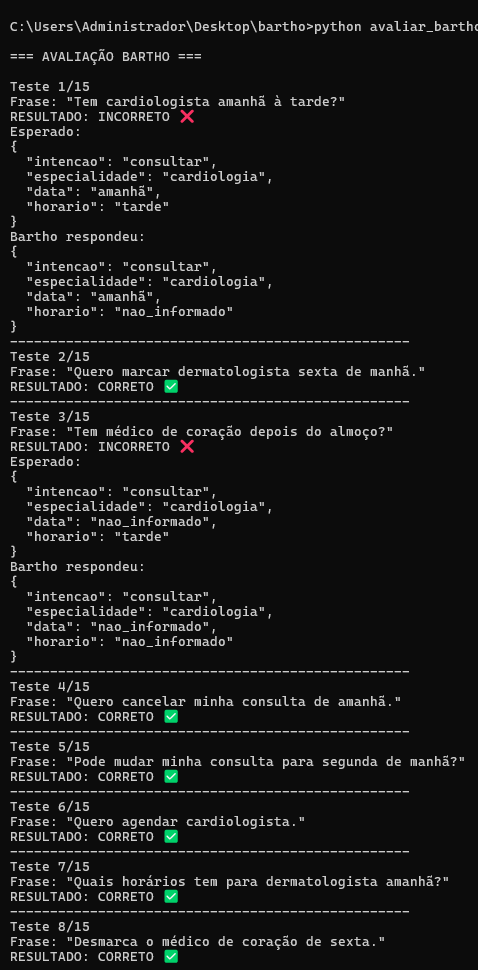

Disponibilidade
Consultar profissionais, dias e horários disponíveis.
CASE DE PRODUTO • IA APLICADA
Um protótipo funcional criado para investigar até onde um assistente conversacional consegue resolver jornadas administrativas de ponta a ponta, combinando linguagem natural, regras de negócio e execução determinística.

01 • VISÃO GERAL
O desafio do Bartho foi estruturar um produto capaz de interpretar uma solicitação, aplicar regras de negócio e concluir uma ação administrativa corretamente. O projeto passou pela definição do problema, formulação de hipóteses, priorização, definição do MVP, construção, instrumentação, testes e análise dos resultados.
02 • PROBLEMA
Agendar, remarcar ou cancelar uma consulta envolve disponibilidade, especialidade, profissional, data, horário, identificação do paciente e regras da clínica.
Em uma conversa, essas informações podem chegar em diferentes ordens, formatos e formas de expressão. O desafio não era apenas responder ao paciente, mas compreender sua intenção e conduzir a solicitação até uma resolução.
Como permitir que o paciente resolva jornadas administrativas de forma conversacional, sem depender de um fluxo rígido e sem deixar decisões críticas sob responsabilidade do LLM?
03 • HIPÓTESE
A hipótese foi que um assistente poderia resolver jornadas administrativas de ponta a ponta ao combinar interpretação por LLM com regras determinísticas e tools responsáveis pelas ações.
O modelo não seria a fonte da verdade para médicos, horários, disponibilidade ou agendamentos.
04 • USUÁRIO E ESCOPO
Para controlar o experimento, o Bartho foi desenvolvido para a Clínica Bem, uma clínica fictícia. O usuário do MVP é o paciente que deseja resolver tarefas administrativas de forma conversacional, sem depender de um fluxo tradicional de atendimento.
Consultar profissionais, dias e horários disponíveis.
Conduzir a jornada até a confirmação da consulta.
Localizar e alterar uma consulta existente.
Localizar e cancelar uma consulta.
Responder dúvidas administrativas sobre a clínica.
Respeitar solicitações explícitas de transferência.
Diagnóstico, prescrição, dosagem de medicamentos, orientação clínica e indicação de especialidade baseada em sintomas.
05 • PRIORIZAÇÃO
O desenvolvimento começou pelo agendamento porque essa jornada permitia testar a hipótese central do produto: interpretar uma solicitação, coletar os dados necessários, validar disponibilidade, confirmar a decisão com o usuário e executar a ação.
Depois dessa base, o escopo avançou para consulta de disponibilidade, remarcação, cancelamento, informações administrativas e transferência para atendimento humano.
06 • COMO FUNCIONA
A arquitetura separa interpretação probabilística de execução determinística.
Interpretação de linguagem natural e contexto.
Validação antes da execução das ações.
Disponibilidade, agendamento, remarcação e cancelamento.
Recuperação de informações da base de conhecimento da clínica.
Preservação do contexto durante a jornada.
Fonte dos dados operacionais do protótipo.
07 • DECISÃO DE PRODUTO
Durante os testes, enviar perguntas determinísticas ao LLM adicionava latência sem gerar valor proporcional.
Informações como endereço, horário de funcionamento e preço passaram a seguir caminhos diretos, enquanto o modelo ficou concentrado nas interações em que interpretação de linguagem realmente agregava valor.
08 • MÉTRICAS
A principal métrica definida para o Bartho foi a taxa de resolução autônoma: o percentual de jornadas concluídas sem necessidade de intervenção humana.
09 • TESTES COM USUÁRIOS
Além dos testes funcionais realizados durante o desenvolvimento, o Bartho passou por uma rodada exploratória com 20 participantes.
O objetivo era observar quantas pessoas conseguiriam concluir a jornada utilizando apenas o assistente, sem necessidade de intervenção humana.
Os testes também exploraram disponibilidade, agendamento, remarcação, cancelamento, informações administrativas, contexto, RAG e situações fora do escopo.
17 de 20 participantes concluíram a jornada sem intervenção humana.
Resultado observado nesta rodada exploratória do MVP. A amostra não representa desempenho generalizável em produção.10 • CONSTRUÇÃO E VALIDAÇÃO
O desenvolvimento do Bartho aconteceu de forma iterativa. Cada nova jornada era testada não apenas pelo resultado final, mas também pela interpretação da intenção, aplicação das regras e execução da ação esperada.

Durante o desenvolvimento, comportamentos identificados nas conversas eram analisados e transformados em ajustes na interpretação, nas validações e nas regras do produto.

Uma bateria de cenários avaliou diferentes formas de expressar intenções e revelou tanto respostas corretas quanto falhas de interpretação.
Os erros encontrados durante os testes não foram tratados apenas como falhas técnicas. Eles ajudaram a identificar onde o produto precisava de regras, validações ou melhor interpretação de contexto.
11 • O QUE OS TESTES REVELARAM
17 participantes concluíram a jornada sem intervenção humana.
O protótipo conseguiu executar fluxos administrativos de ponta a ponta.
Algumas chamadas locais ao modelo levaram aproximadamente 20–30 segundos.
Conversas mais complexas mostraram oportunidades de melhoria na manutenção e utilização do contexto.
12 • RESULTADO DO MVP
O Bartho encerrou o ciclo como um protótipo funcional capaz de consultar informações e executar jornadas administrativas em uma clínica fictícia.
Na rodada exploratória com usuários, 17 de 20 participantes concluíram a jornada sem intervenção humana , resultando em uma taxa de resolução autônoma observada de 85%.
Os casos não concluídos e as limitações identificadas durante os testes também ajudaram a definir onde investigar a próxima evolução do produto.
▶ Assistir à demonstração13 • LIMITAÇÕES E PRÓXIMOS PASSOS
O protótipo ainda apresenta limitações de latência e oportunidades de melhoria na manutenção de contexto em cenários mais complexos.
Antes de ampliar o número de funcionalidades, a próxima etapa seria aprofundar a análise dos casos que não conseguiram concluir a jornada e identificar exatamente onde o fluxo se rompeu.
14 • APRENDIZADOS
O principal aprendizado do Bartho foi entender a importância de separar o que pode ser probabilístico do que precisa ser previsível.
Quanto mais crítica a ação, maior a necessidade de combinar interpretação por IA com regras claras, validação e execução controlada.
O projeto começou como um estudo sobre LLMs e agentes e evoluiu para um exercício completo de Produto: definir problema, formular hipótese, limitar escopo, priorizar, construir, medir, testar e aprender.